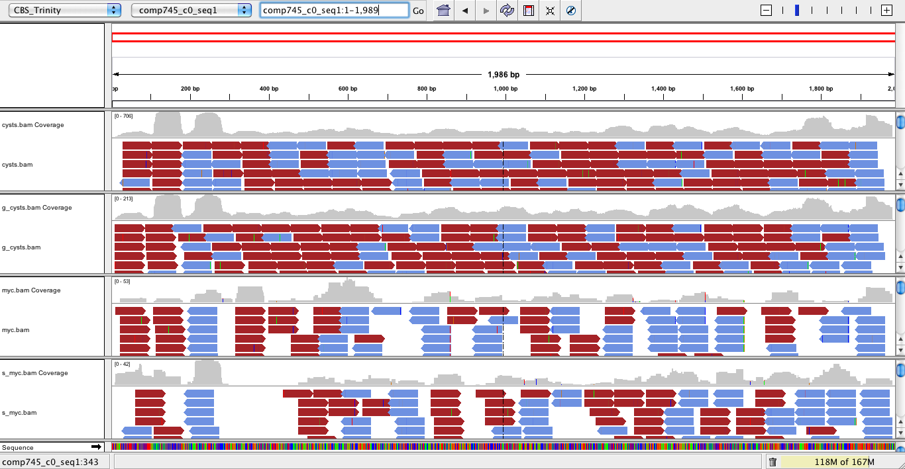

TRINITY_RNASEQ_ROOT/util/alignReads.pl --left left.fq --right right.fq --seqType fq --target Trinity.fasta --aligner bowtie
|
Note
|
Processes described below are under rapid development, subject to change, and should be pursued with caution. |
The following describes methods available, mostly through third-party tools, for generating alignments of RNA-Seq reads to the Trinity transcripts, visualizing the read mappings and coverage information, and estimating abundance values of transcripts (a prerequisite for studies of differential expression).
Align reads to the Trinity transcripts using the util/alignReads.pl script, which can leverage Bowtie, BLAT, or BWA as the aligner. In the case of BLAT and Bowtie, you must install these tools separately. A specially modified version of BWA is included in the latest Trinity distribution which reports multiply-mapped reads at each of their locations, rather than a single random placement.
Caution should be taken in using this wrapper and the modified tools, because there are advantages and disadvantages to each, as described below:
Bowtie: Abundance estimation using RSEM (as described below) currently leverages Bowtie gap-free alignments. Running bowtie (original, not the newer bowtie 2…still investigating) with paired fragment reads will exclude alignments where only one of the mate pairs aligns. Since Trinity doesn't perform scaffolding across sequencing gaps yet, there will be cases (moreso in fragmented transcripts corresponding to lowly expressed transcripts) where only one of the mate-pairs aligns. The alignReads.pl script operates similarly to TopHat in that it runs Bowtie to align each of the paired fragment reads separately, and then groups them into pairs afterwards. We capture both the paired and the unpaired fragment read alignments from Bowtie for visualization and examining read support for the transcript assemblies. The properly-mapped pairs are further extracted and can be used as a substrate for RSEM-based abundance estimation (see below).
BLAT: we've found BLAT to be particularly useful in generating spliced short-read alignments to targets where short introns exist, but GSNAP is superior. We include BLAT here only for exploratory purposes.
BWA: the modified version of BWA provides SAM entries for each of the multiply mapped reads alternative mappings, but grouping of pairs is performed by the alignReads.pl script, and the total number of alignments reported tends to be substantially less than running the latest version of BWA in paired mode without having the multiply mapped individual reads. BWA is recommended specifically for SNP-calling exercises, and we're continuing to explore the various options available, including further tweaks here.
Our standard practice for aligning reads to the Trinity transcripts for downstream analyses, including visualization and abundance estimation, is to run alignReads.pl with the —bowtie option, like so:
TRINITY_RNASEQ_ROOT/util/alignReads.pl --left left.fq --right right.fq --seqType fq --target Trinity.fasta --aligner bowtie
(if your data are strand-specific, be sure to set --SS_lib_type as done with Trinity.pl)
Note, this alignment process generates lots of output files, ex. for paired strand-specific data:
-rw-rw-r-- 1 bhaas broad 33644239 Oct 29 09:51 bowtie_out.coordSorted.sam -rw-rw-r-- 1 bhaas broad 5761928 Oct 29 09:51 bowtie_out.coordSorted.bam -rw-rw-r-- 1 bhaas broad 33644239 Oct 29 09:51 bowtie_out.nameSorted.sam -rw-rw-r-- 1 bhaas broad 4256476 Oct 29 09:51 bowtie_out.nameSorted.bam -rw-rw-r-- 1 bhaas broad 4416 Oct 29 09:51 bowtie_out.coordSorted.bam.bai -rw-rw-r-- 1 bhaas broad 33634652 Oct 29 09:51 bowtie_out.coordSorted.sam.+.sam -rw-rw-r-- 1 bhaas broad 9587 Oct 29 09:51 bowtie_out.coordSorted.sam.-.sam -rw-rw-r-- 1 bhaas broad 33634652 Oct 29 09:51 bowtie_out.nameSorted.sam.+.sam -rw-rw-r-- 1 bhaas broad 9587 Oct 29 09:51 bowtie_out.nameSorted.sam.-.sam -rw-rw-r-- 1 bhaas broad 5759999 Oct 29 09:51 bowtie_out.coordSorted.sam.+.bam -rw-rw-r-- 1 bhaas broad 4416 Oct 29 09:51 bowtie_out.coordSorted.sam.+.bam.bai -rw-rw-r-- 1 bhaas broad 1836 Oct 29 09:51 bowtie_out.coordSorted.sam.-.bam -rw-rw-r-- 1 bhaas broad 1680 Oct 29 09:51 bowtie_out.coordSorted.sam.-.bam.bai -rw-rw-r-- 1 bhaas broad 4255371 Oct 29 09:51 bowtie_out.nameSorted.sam.+.bam -rw-rw-r-- 1 bhaas broad 1843 Oct 29 09:51 bowtie_out.nameSorted.sam.-.bam -rw-rw-r-- 1 bhaas broad 3880361 Oct 29 09:51 bowtie_out.nameSorted.sam.+.sam.PropMapPairsForRSEM.bam
If you do not have strand-specific reads, then you'll not have the (+) and (-) versions of the files as above.
The bowtie_out.coordSorted.bam file contains both properly-mapped pairs and single unpaired fragment reads. This file can be used for visualizing the alignments and coverage data using IGV (below).
The *nameSorted*PropMapPairsForRsem.bam contains only the properly-mapped pairs for use with the RSEM software (see below). If you have single-stranded RNA-Seq data, then use the bowtie_out.nameSorted.bam file directly (or strand-specific version).
The Trinity Transcripts and read alignments can be visualized using the Integrated Genomics Viewer.
Just import the Trinity.fasta file as a genome, and load up the bam file containing the aligned reads. A screenshot below shows how the data are displayed:

We've found RSEM to be enormously useful for abundance estimation in the context of transcriptome assemblies.
Note, for the most accurate abundance estimation, we recommend that you obtain the latest RSEM software from the Dewey lab and have it do all the work, including running bowtie to generate alignments, and the downstream quantitation.
However, we currently include a slightly modified version of RSEM with Trinity that will leverage the alignments generated by util/AlignReads.pl with Bowtie as described above. Why do this? Mostly for pragmatic reasons: RSEM, by design, prefers to run bowtie with liberal alignment settings, whereas we are interested in visualizing and studying the higher quality alignments. Also, we prefer generating a single set of alignments that can be leveraged for both visualization and abundance estimation. This whole process is likely to change in the near future so that a single set of alignments can be generated optimally for both purposes, leveraging the most current version of RSEM and applying a set of alignment filters to extract those that are most useful for visualization (Work in progress).
To run the included version of RSEM, execute the following:
TRINITY_RNASEQ_ROOT/util/RSEM_util/run_RSEM.pl --transcripts Trinity.fasta --name_sorted_bam bowtie_out.nameSorted.sam.+.sam.PropMapPairsForRSEM.bam --paired
which will create output files:
RSEM.isoforms.results : EM read counts per Trinity transcript RSEM.genes.results : EM read counts on a per-Trinity-component (aka... gene) basis, 'gene' used loosely here.
The output for the isoforms file looks like so:
transcript_id gene_id length effective_length expected_count TPM FPKM IsoPct comp128_c0_seq1 comp128_c0 209 1.73 0.00 0.00 0.00 0.00 comp13_c0_seq1 comp13_c0 235 7.16 1.00 12561.51 5282.75 100.00 comp22_c0_seq1 comp22_c0 215 2.62 0.00 0.00 0.00 0.00 comp28_c0_seq1 comp28_c0 329 54.60 4.00 6591.85 2772.21 100.00 comp33_c0_seq1 comp33_c0 307 40.30 3.00 6697.56 2816.66 100.00 comp35_c0_seq1 comp35_c0 219 3.33 0.00 0.00 0.00 0.00 comp35_c1_seq1 comp35_c1 204 1.19 1.00 75295.99 31665.75 100.00 comp39_c0_seq1 comp39_c0 348 68.20 1.00 1319.32 554.84 100.00 comp39_c0_seq2 comp39_c0 255 13.97 0.00 0.00 0.00 0.00 comp41_c0_seq1 comp41_c0 592 295.77 12.00 3650.37 1535.16 100.00 comp44_c0_seq1 comp44_c0 361 78.10 1.00 1151.96 484.46 100.00 comp44_c1_seq1 comp44_c1 280 25.22 1.00 3568.05 1500.54 100.00
and the genes file provides expression results on a per-Trinity component basis:
gene_id transcript_id(s) length effective_length expected_count TPM FPKM comp128_c0 comp128_c0_seq1 0.00 0.00 0.00 0.00 0.00 comp13_c0 comp13_c0_seq1 235.00 7.16 1.00 12561.51 5282.75 comp22_c0 comp22_c0_seq1 0.00 0.00 0.00 0.00 0.00 comp28_c0 comp28_c0_seq1 329.00 54.60 4.00 6591.85 2772.21 comp33_c0 comp33_c0_seq1 307.00 40.30 3.00 6697.56 2816.66 comp35_c0 comp35_c0_seq1 0.00 0.00 0.00 0.00 0.00 comp35_c1 comp35_c1_seq1 204.00 1.19 1.00 75295.99 31665.75 comp39_c0 comp39_c0_seq1,comp39_c0_seq2 348.00 68.20 1.00 1319.32 554.84 comp41_c0 comp41_c0_seq1 592.00 295.77 12.00 3650.37 1535.16 comp44_c0 comp44_c0_seq1 361.00 78.10 1.00 1151.96 484.46 comp44_c1 comp44_c1_seq1 280.00 25.22 1.00 3568.05 1500.54 comp45_c0 comp45_c0_seq1 0.00 0.00 0.00 0.00 0.00 comp47_c1 comp47_c1_seq1 562.00 265.78 8.00 2708.23 1138.95 comp48_c0 comp48_c0_seq1 433.00 139.70 5.00 3220.28 1354.29 comp49_c0 comp49_c0_seq1 272.00 21.31 3.00 12667.38 5327.27 comp49_c1 comp49_c1_seq1 324.00 51.21 2.00 3514.23 1477.91 comp52_c0 comp52_c0_seq1 301.00 36.70 2.00 4902.98 2061.95 comp53_c0 comp53_c0_seq1 304.00 38.48 1.00 2337.98 983.24
If you want to filter out the likely transcript artifacts and lowly expressed transcripts, you might consider retaining only those that represent at least 1% of the per-component (IsoPct) expression level. Because Trinity transcripts are not currently scaffolded across sequencing gaps, there will be cases where smaller transcript fragments may lack enough properly-paired read support to show up as expressed, but are still otherwise supported by the read data. Therefore, filter cautiously and we don't recommend discarding such lowly expressed (or seemingly unexpressed) transcripts, but rather putting them aside for further study.
Under TRINITY_RNASEQ_ROOT/sample_data/test_Trinity_Assembly, execute runMe.sh 1 to build Trinity transcript assemblies using the sample data, and then run through the downstream alignment and abundance estimation steps.